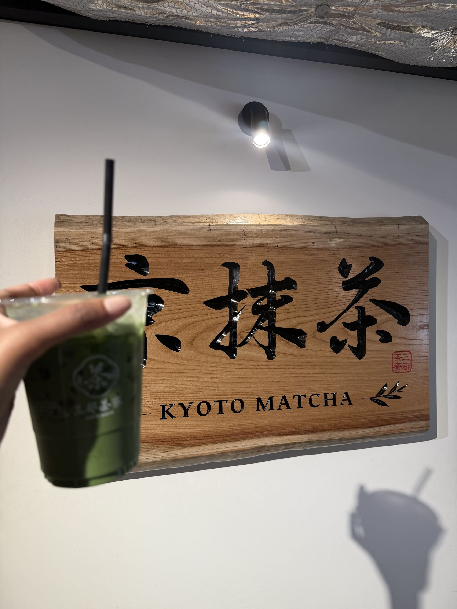
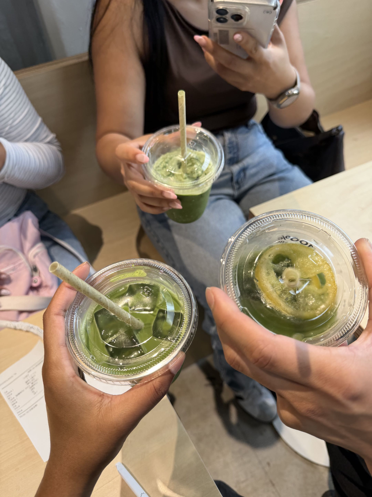
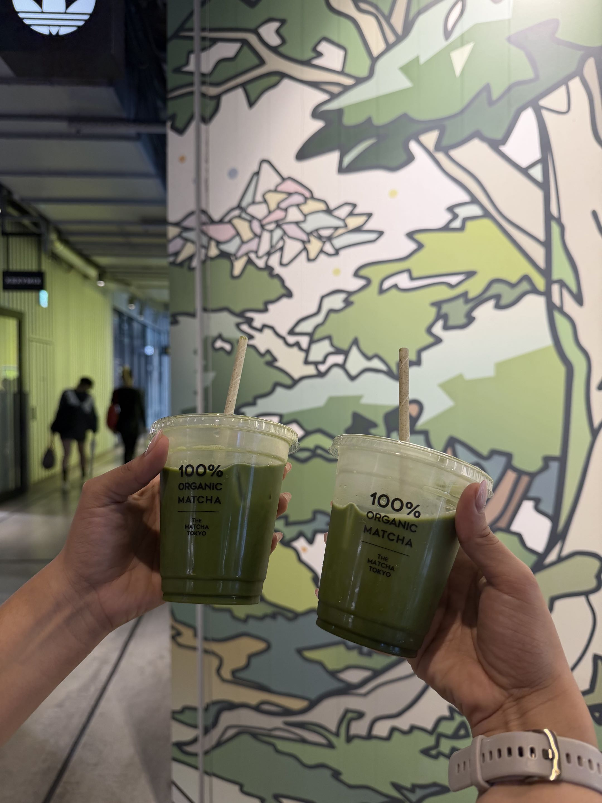
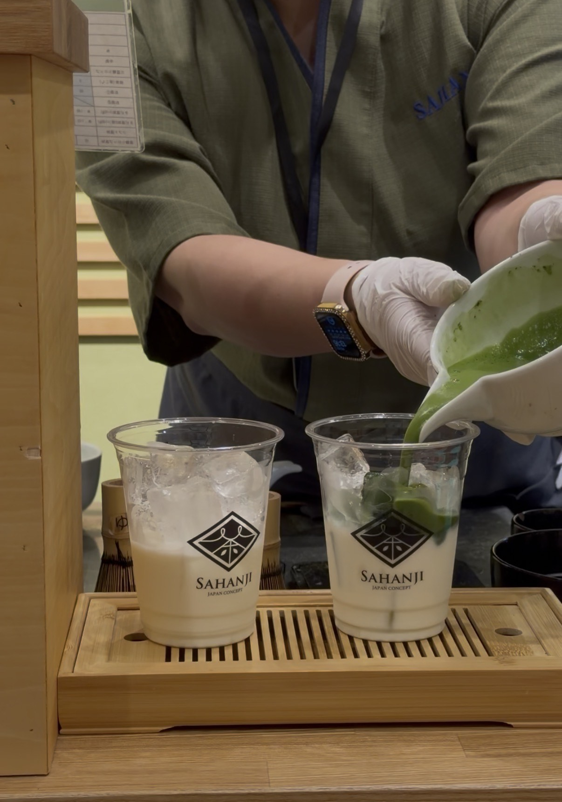
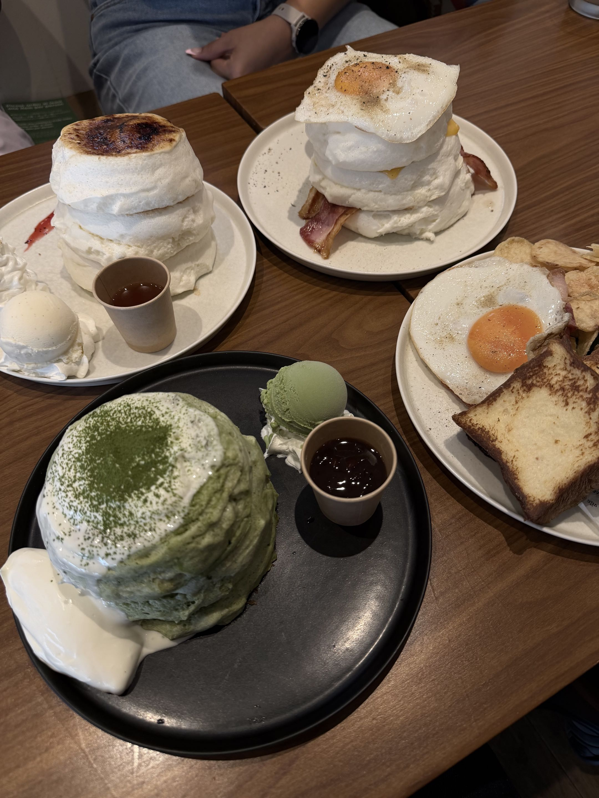
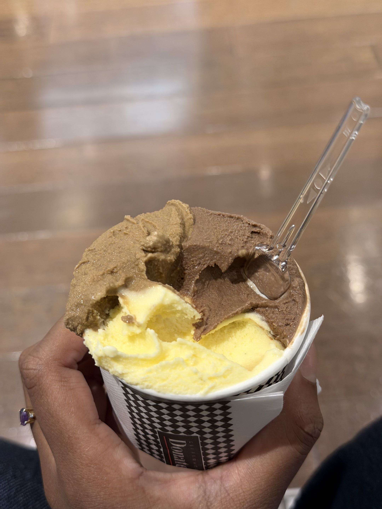
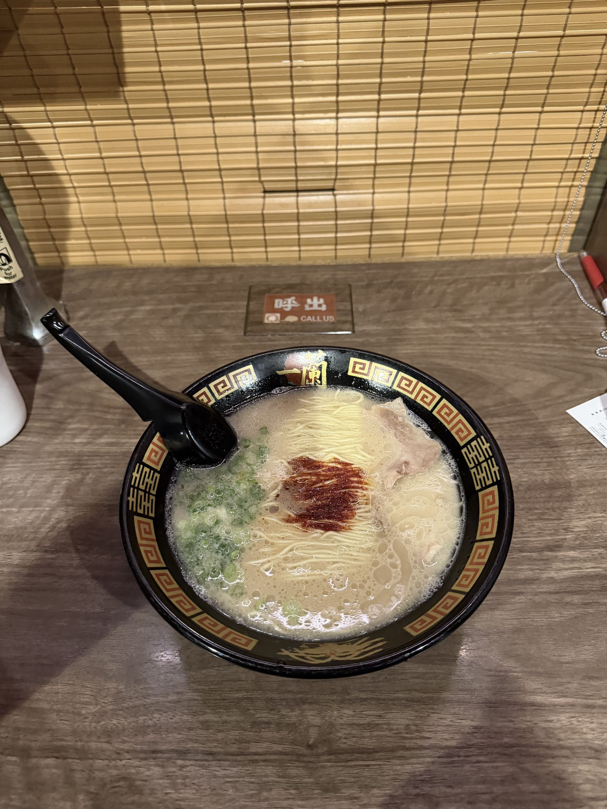
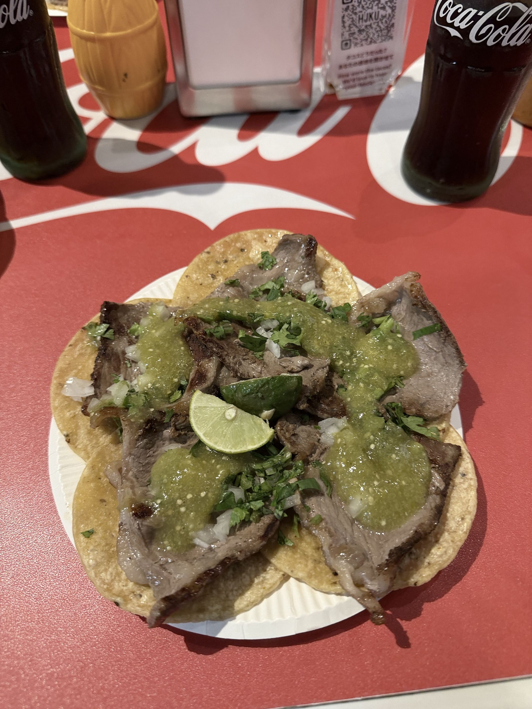
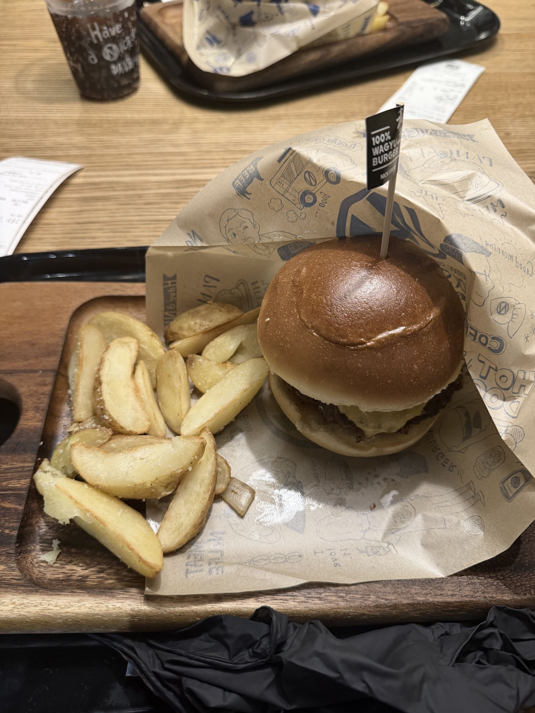
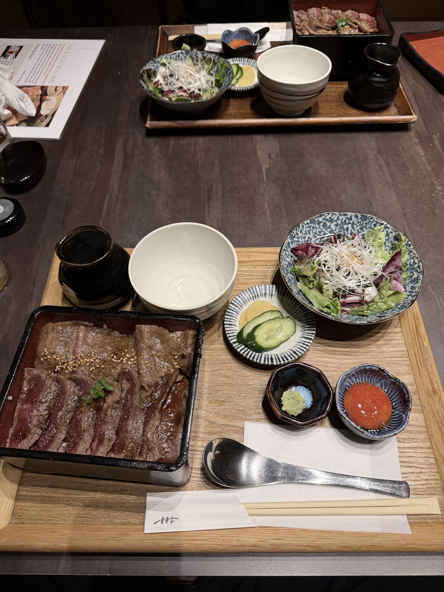

A TASTE OF THE JOURNEY
Food Diaries
If we were going through my Japan camera roll together, these are the food photos I'd stop scrolling for. We'd be here a while, especially once we got to the matcha.
The Matcha Chapter
Okay, before we get to the ramen and Wagyu, let me show you my matcha photos. Pick the one you'd order first. And yes, the pancakes count.




Fluffy Matcha Pancakes

Just when you thought we were done with matcha, here it is in pancake form. If you're choosing between a drink and dessert, this is your sign to at least look at the dessert menu.
Three Flavors, One Swirl in Shibuya

My ice cream stop in Shibuya had three flavors in one swirl: vanilla, coffee, and chocolate. I didn't have to pick just one, which is exactly how I like my dessert decisions.
Tonkotsu Ramen in Tokyo

In Tokyo, I ordered tonkotsu ramen, which has a rich broth made from pork bones. If you asked what kind of ramen I had on the trip, this is the bowl I'd pull up first.
Tacos in Shinjuku

Tacos in Shinjuku were a fun detour from the ramen and Wagyu in my food diary. I'm glad I left room in my plans to try something different.
A Wagyu Burger in Kyoto

I tried Wagyu in burger form in Kyoto. It was fun to try it in something familiar, and it was a different way to enjoy Wagyu from the meal I had in Osaka.
My Favorite Wagyu Spot in Osaka

This was my favorite Wagyu spot in Osaka. If I could go back for just one Wagyu meal from this trip, this would be my pick.
Leave Room for a Food Detour
Save a few places you want to try, but don't plan every meal. Walk around and see what catches your eye. The noodle shop, bakery, or little café you find along the way might be the one you end up telling everyone about.